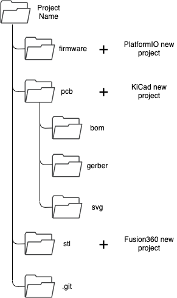
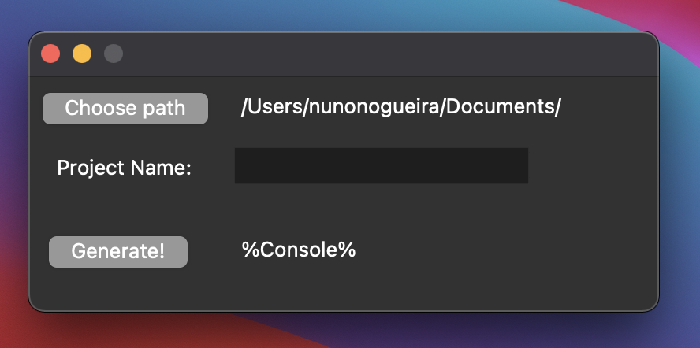

How to create a directory generator with Python for your ideas
Ever since I remember, I've always struggle with the fact that I couldn't manage very well my own ideas. The version control was there on the code files, but not on the others, like 3d design files or gerber files. This mess results in outdated files, while others were updated since the start. I would end up with an updated firmware with an outdated pcb, causing friction between my brain cells 🤧
So I came up with a solution. So simple but yet so useful - create a folder with multiple folders meant to store information about the field.

Four folders, each one with a different use.
The Firmware is stored in a folder where the PlatformIO will create the project code.
The pcb is where the KiCad project is going to be, and even has three others folder to store the bill of materials in html (seen in the previous post), images of the pcb in svg and a final gerber, ready to be orderer!
To store the Fusion360 project files or Cura .gcode files, the stl folder is there to fulfill this need.
Finally, the .git is where the control version is done and stored 😉
Now, to do this I used Python. Easy and simple as usual.
Since I tend to use both operation systems, windows and MacOS, the code is adapted to both.
The code seems to work pretty great and it is fast as well.
How to create a directory generator with Python for your ideas v0.2
Last post was about using a directory generator kind of thing. So I thought about making it more user friendly and recently I saw tkinter which is a lib that creates a GUI for Python 🖥️
The requirements were the following:
- Choose save directory and print text
- Choose directory name from an input text
- Create README.md files for each folder.
- Generate directory
- Print some debug stuff
First of all, tkinter is super easy to use. Python 3.9.2 does not come with it, but it is only required one single line to install it.
The import of filedialog enables the user to choose the save path directory. This event is triggered by a button.
Afterwards, the last button, the "Generate" one, triggers the creation of the desired directories. The README.me can be edited inside the python code. Regarding createFile(path, readme content) it is possible to create a README.me and edit as this:
createFile(direc, "This is the main README of the project. ")
A default directory path is set to facilitate the use of this application, but the same can be changed in:
## DEFAULT DIRECTORY
self.var.set('/Users/nunonogueira/Documents/')
The final result has been tested in macOS 11.2.3 and not yet in Windows... But I'll test it soon!

Finally, here the code I used: